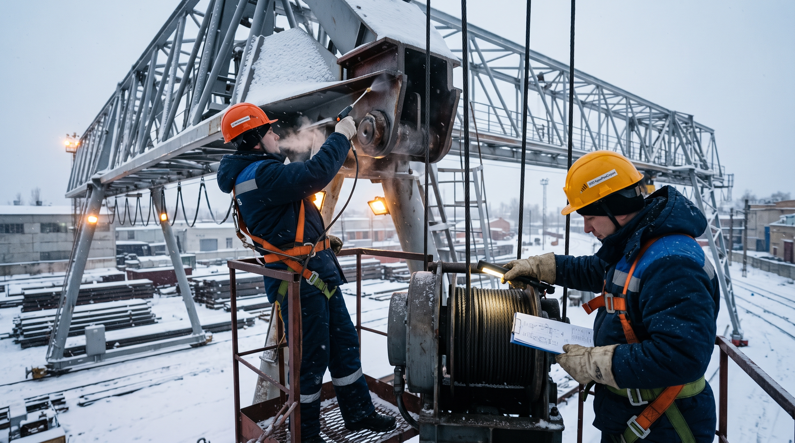

Замена масел, проверка систем обогрева, антикоррозийная обработка.

Зима — это серьёзное испытание для грузоподъёмного крана. Низкие температуры, снег, лёд и перепады влажности ускоряют износ механизмов и приводят к отказам, которые летом просто не случаются. Чтобы кран работал стабильно, его нужно готовить к сезону заранее.
Подготовку к зиме лучше начинать осенью, до наступления устойчивых холодов. Оптимально — за месяц до ожидаемых минусовых температур. Это позволяет спокойно провести сезонное ТО и заменить всё, что нужно.
Летние масла при низких температурах густеют, и механизмы начинают работать с перегрузкой. Поэтому:
Если кран имеет кабину, в ней должно быть отопление. Перед зимой:
Зимой металл страдает от влаги, снега и реагентов. Чтобы защитить кран:
Подготовка крана к зиме — это не «разовая акция», а часть сезонного ТО. Замена масел, проверка обогрева и антикоррозийная обработка стоят относительно недорого. А вот аварийный ремонт зимой обходится в разы дороже и опаснее. Если не уверены в своих силах — доверьте подготовку специалистам.
Заполните форму — мы свяжемся с вами и рассчитаем стоимость работ. Ответим в течение 1 рабочего дня.